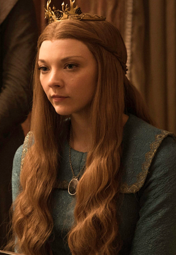
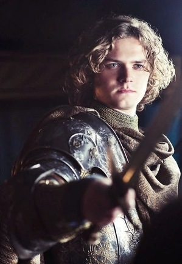

| Nom | Image | Biographie |
|---|---|---|
| Margaery Tyrell |  |
Interprète Natalie Dormer Saison(s) 2, 3, 4, 5, 6 Titre(s) Reine Consort Lady Statut Décédée Mort Brûlée vive lors de l'explosion de feu grégeois ayant détruit le Septuaire de Baelor causée par Cersei Lannister Origine Hautjardin Allégeance Maison Tyrell Maison Baratheon de Port-Réal(par mariage) Culture Andals Religion Anciens dieux Relation Renly Baratheon - premier mari † Joffrey Baratheon - second mari † Tommen Baratheon - troisième mari † Parents Mace Tyrell - père† Alerie Tyrell - mère Fratrie Ser Loras Tyrell - frère† |
| Oleanna Tyrell |  |
Interprète Diana Rigg Saison(s) 3, 4, 5, 6, 7 Titre(s) Dame de Hautjardin Dame Suzerains du Bief (de facto) Gouvernante du Sud Lady Alias La Reine des Épines Statut Décédé Mort Suicide par empoisonnement Origine La Treille Allégeance Maison Tyrell (par mariage) Maison Redwyne Religion Foi des Sept Culture Andals Relation Luthor Tyrell - mari † Daeron Targaryen - ex-fiancé † Parents Hoster Tully - père † Minisa Tully - mère † Enfant(s) Mace Tyrell - fils † Fratrie Viola Redwyne - sœur |
| Loras Tyrell |  |
Interprète Finn Jones Saison(s) 1, 2, 3, 4, 5, 6 Titre(s) Ser Lord Commandant dela Garde Royale (sous Renly Baratheon) Alias Le Chevalier des Fleurs Statut Décédé Mort Brûlé vif lors de l'explosion de feu grégeois ayant détruit le Septuaire de Baelor causée par Cersei Lannister Origine Hautjardin Allégeance Maison Tyrell Religion Anciens dieux Foi des Sept Culture Andals Relation Renly Baratheon - amant † Parents Mace Tyrell - père † Alerie Tyrell - mère Fratrie Margaery Tyrell - sœur † |